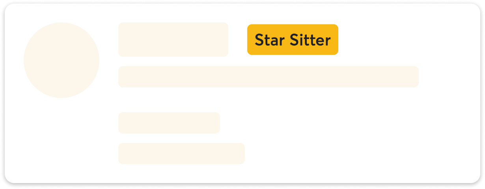

Rover · 2023–2025 · Loyalty & Incentives
Star Sitter Program
4.8% revenue per new customer · ~$2.5M incremental annual revenue
This page is password protected.
Three gaps remained despite existing sitter tooling: owners couldn't identify the most reliable sitters; sitters saw metrics but lacked motivation; and off-platform diversion was a strategic revenue leak.
Star Sitter was a third lever — provider-level status that gamified supply-side behaviours, directed demand to reliable sitters, and tied status to on-platform repeat behaviour.

We launched Sitter Insights before introducing status — establishing the mental model before asking sitters to compete for a badge. The beta introduced provider-level, non-tiered status: badge on search cards, owner filter, qualification tracking.
The badge shifted owner behaviour. But CX surfaced early cracks: confusion around booking rate, frustration around edge cases.


Usability tests showed sitters skimmed past key rules. We tightened copy, added a "Check your progress" CTA, and made three major fairness changes: recent activity windows, grace periods, and fixing a booking-rate calculation bias.
Moving to a rolling model eliminated quarterly batch refreshes and predictable CX spikes. Sitters earn Star Sitter as soon as they meet criteria. A three-month grace period handles drops.
The Sitter Insights UX simplified dramatically: no more qualification period dropdowns, a single real-time status view.